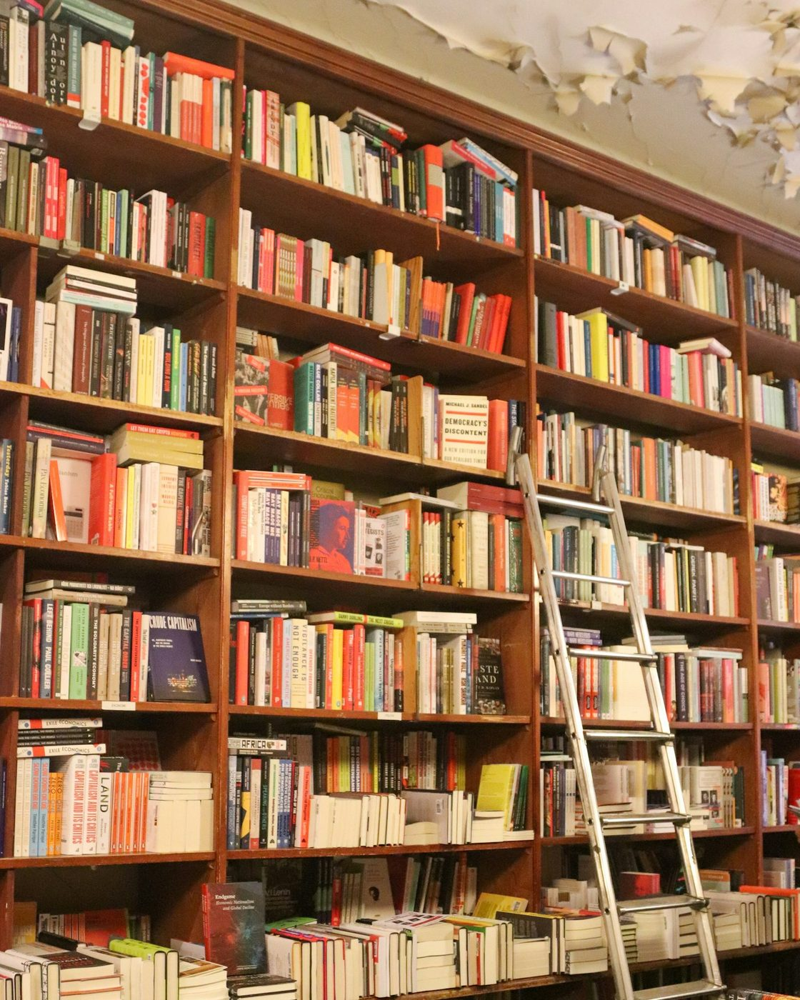

L'Ivresse de lire
Librairie, 8 rue de la Halle, Quimper
Une librairie indépendante ouverte en 2023 près des halles de Quimper. On y flâne entre les rayons de littérature, de poésie, de sciences humaines et de jeunesse, et on peut s'installer au coin café.

Un café, un thé ou un verre à l'heure de l'apéro, le temps de feuilleter un livre avant de le choisir. Les actualités de la librairie sont publiées sur sa page Facebook.
| Lundi | 10h à 19h |
| Mardi | 10h à 19h |
| Mercredi | 10h à 19h |
| Jeudi | 10h à 19h |
| Vendredi | 10h à 19h |
| Samedi | 10h à 19h |
| Dimanche | Fermé |